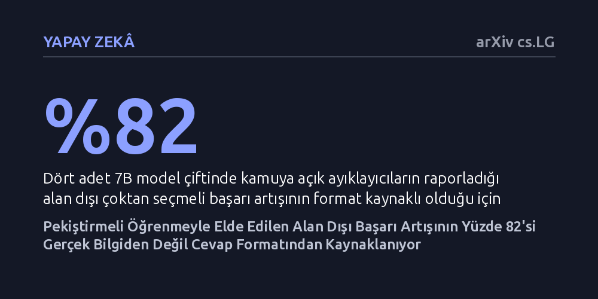

YAPAY-ZEKA · arXiv cs.LG · 2026-10-17
Matematikle eğitilen yapay zekâ modellerinin diğer alanlardaki test başarısının ne kadarının yalnızca cevap biçiminden kaynaklandığı araştırıldı. İncelenen modellerde raporlanan alan dışı kazancın yüzde 82'sinin yeni bir kavrayıştan değil, cevabın ayıklayıcının aradığı kutuya yazılmasından ibaret olduğu saptandı.
Yapay zekânın matematik öğrenerek genel bir akıl yürütme becerisi kazandığı iddiasının, aslında ölçüm araçlarının cevabı aradığı kutuya odaklanmasından doğan biçimsel bir yanılsama olabileceğini gösteriyor.

Büyük dil modellerinin eğitiminde son dönemde öne çıkan yöntemlerden biri, doğrulanabilir ödülle pekiştirmeli öğrenmedir (RLVR). Bu yaklaşımda model, sonucu matematik gibi kurallarla kesin olarak kontrol edilebilen alanlarda çalıştırılarak eğitilir. Ancak araştırmacıları asıl şaşırtan gelişme, yalnızca matematik problemleri çözen bu modellerin, eğitim sonrasında tıp, tarih veya hukuk gibi tamamen farklı konuları kapsayan genel çoktan seçmeli testlerde (örneğin MMLU) de aniden belirgin bir başarı artışı göstermesi oldu. Bu durum, yapay zekânın matematikle uğraşırken bir tür genel akıl yürütme ve kavrayış yeteneği geliştirdiği şeklinde yorumlandı.
Fakat bu değerlendirmelerin perde arkasında gözden kaçan kritik bir teknik ayrıntı vardı: Modellerin binlerce soruya verdiği yanıtları insanlar tek tek okuyup değerlendirmez. Bunun yerine modelin metnini tarayan ve 'cevap ayıklayıcı' adı verilen küçük yazılım araçları kullanılır. Bu araçlar genellikle modelin yanıtını özel bir kutu işareti ('\boxed{}') içinde arar; model doğru yanıtı cümlenin içinde açıkça verse bile kutuya koymamışsa ayıklayıcı bunu göremez ve soruyu yanlış sayar. Dolayısıyla ortada kritik bir soru belirdi: Pekiştirmeli öğrenme modeli gerçekten daha akıllı hale mi getiriyordu, yoksa sadece cevabı ayıklayıcının aradığı kutunun içine yazmayı mı öğretiyordu?
Araştırmacı bu sorunun cevabını bulmak için modelleri baştan eğitip yüksek hesaplama maliyetlerine girmek yerine, son derece zekice ve doğrudan bir ölçüm yöntemi geliştirdi. Açık kaynak olarak yayımlanmış dört farklı 7 milyar parametreli temel model ile bunların pekiştirmeli öğrenmeyle eğitilmiş sürümlerini (SimpleRL çiftleri) ve farklı bir eğitim tekniğiyle hazırlanmış 32 milyar parametreli bir başka model çiftini mercek altına aldı. Bu modellerin çoktan seçmeli test sorularına ürettiği tüm yanıtlar kaydedildi.
Kaydedilen bu yanıtlar daha sonra iki farklı ayıklama mantığıyla yeniden puanlandı. İlk turda, kamuya açık kod depolarından yaygın biçimde kopyalanıp kullanılan standart ayıklayıcılar çalıştırıldı. İkinci turda ise araştırmacının kendi geliştirdiği daha kapsayıcı bir ayıklayıcı devreye girdi; bu ayıklayıcı doğru şıkkın ister '\boxed{}' kutusu içinde ister düz metin akışında belirtilmiş olmasına bakmaksızın cevabı okuyabiliyordu. Tarafsızlığı garanti altına almak adına, insan değerlendirmesi yerine bağımsız büyük dil modelleri de hakem okuyucu olarak görevlendirildi ve modeller aynı zamanda istemde kutu talep edilen koşulda da test edildi.
Yapılan karşılaştırmalı puanlama, literatürde büyük bir kazanım olarak sunulan tablonun arka planını net bir biçimde ortaya çıkardı. İncelenen dört adet 7 milyar parametreli model çiftinde, standart ayıklayıcıların raporladığı alan dışı çoktan seçmeli başarı artışının tam yüzde 82'si, cevabı metinden de okuyabilen esnek ayıklayıcı altında yok oldu. Temel modeller aslında doğru yanıtı metin içerisinde zaten belirtiyordu; pekiştirmeli öğrenme ise modelin bilgisini artırmamış, yalnızca cevabı ayıklayıcının ilk baktığı kutunun içine taşımıştı.
Bu bulgu farklı kontrol yöntemleriyle de doğrulandı. Ayıklayıcı yerine bağımsız büyük dil modelleri hakem olarak okuduğunda format kaynaklı kazanç oranı yüzde 77 olarak ölçüldü. Modele verilen istemde doğrudan kutu formatı talep edildiğinde dahi format kaynaklı yapay kazanç oranı yüzde 79 seviyesinde kaldı. Öte yandan, farklı bir yöntemle eğitilen 32 milyar parametreli model çiftinde bu format yanılsamasına neredeyse hiç rastlanmadı; çünkü bu modelin temel sürümü istendiğinde cevabı zaten kutuluyor, pekiştirmeli sürümü ise istenmediğinde bunu yapmıyordu.
Bu çalışmanın ortaya koyduğu en önemli sonuç, yapay zekâda raporlanan yetenek artışlarının bir kısmının aslında modelin zekâsından değil, onu değerlendiren ölçüm araçlarının kusurlarından kaynaklanabileceğidir. Bir modelin eğitim gördüğü matematik alanından alakasız diğer disiplinlere üstün bir kavrayış aktardığı sonucuna varmadan önce, kullanılan testlerin gerçek bilgiyi mi yoksa yalnızca biçimsel bir uyumu mu ölçtüğü dikkatle sorgulanmalıdır.
Araştırma aynı zamanda yapay zekâ topluluğuna pratik ve ekonomik bir denetim yöntemi sunuyor. Daha önce raporlanmış kazanımların ne kadarının format hilesi olduğunu saptamak için günlerce süren pahalı pekiştirmeli öğrenme döngülerini baştan çalıştırmaya gerek yoktur; kaydedilmiş çıktıları biçimden bağımsız ikinci bir ayıklayıcıyla yeniden puanlamak, yanılsamanın boyutunu ortaya çıkarmak için yeterlidir.